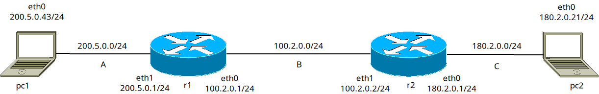
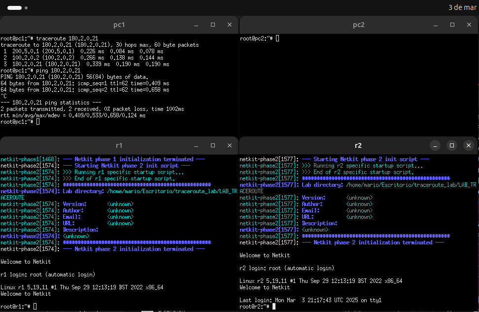

Mario Valiño Canalejas 03/03/25
Creación de un laboratorio para comprobar el funcionamiento de traceroute.


Con traceroute vemos cuántos saltos debe dar pc1 para llegar a pc2.
Dejo la captura y el laboratorio en la web.